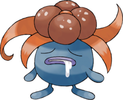

Mystherbe - 043
Nom Anglais : Oddish
Nom Original : Nazonokusa, ナゾノクサ
Génération : Première
Type : Plante, Poison
Catégorie : Pokémon Racine
Sexe : Femelle : 50% | Mâle : 50%
Description : Mystherbe ressemble à un petit oignon bleu avec deux petits yeux rouges. Il a une touffe de feuilles vertes qui trône sur sa tête. À l'extrémité de son corps, apparaissent deux petits pieds, bleus eux aussi.
Mystherbe - 043
Ortide - 044